정보통신기사(구) (2016-03-06 기출문제)
1과목: 디지털 전자회로
1. 다음 중 교류입력의 반주기에 대해 브리지 정류기의 다이오드 동작조건에 대한 설명으로 옳은 것은?
- 한 개의 다이오드가 순방향 바이어스이다.
- 두 개의 다이오드가 순방향 바이어스이다.
- 모든 다이오드가 순방향 바이어스이다.
- 모든 다이오드가 역방향 바이어스이다.
(정답률: 78%)

2. 다음 정전압회로에서 제너 다이오드의 내부저항(rd)는 2[Ω]이고, 입력 직렬저항 (Rs)는 500[Ω]일 경우 전압 안정계수(S)는 약 얼마인가?
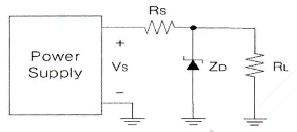
- 0.004
- 0.0⑤
- 0.006
- 0.007
(정답률: 69%)
3. 다음 정류회로의 명칭은?
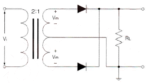
- 단상반파 정류회로
- 3상반파 정류회로
- 단상전파 정류회로
- 브릿지전파 정류회로
(정답률: 69%)
4. 다음 중 베이스 접지 증폭기에 대한 설명으로 틀린 것은?
- 다른 접지증폭 방식에 비해 전압이득을 크게 할 수 있다.
- 출력임피던스가 다른 접지증폭 방식에 비해 높다.
- 전류이득은 대략 1이다.
- 입력과 출력간의 위상은 반전이다.
(정답률: 73%)
5. 다음 중 트랜지스터(Transistor)를 달링턴 접속하였을 경우에 대한 설명으로 틀린 것은?
- 전류이득이 높아진다.
- 입력임피던스가 낮아진다.
- 전압이득은 1보다 작다.
- 출력임피던스가 낮아진다.
(정답률: 54%)
6. 다음 그림에서 입력전압 Vi는? (단, R1=2R2)
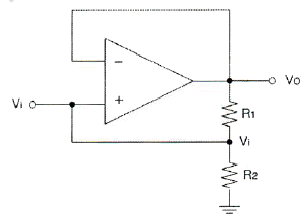
- Vi=Vo
- Vi=2Vo
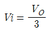
- Vi=3Vo
(정답률: 75%)
7. 다음 중 부궤환 증폭기의 장점이 아닌 것은?
- 주파수 특성이 개선된다.
- 부하변동에 의한 이득 변동의 감소로 동작이 안정된다.
- 일그러짐이 감소한다.
- 전력효율이 좋아진다.
(정답률: 61%)
8. 다음 중 발진을 유지하기 위한 조건이 아닌 것은?
- 증폭기의 출력이 유지되는 방향으로 궤환이 일어나야 한다.
- 궤환루프의 위상천이가 0˚이어야 한다.
- 전체 폐루프의 전압이득이 (Ad)이 0이어야 한다.
- 발진의 안정조건은 |Aβ|=1이어야 한다. (A: 증폭기 증폭도, β: 궤환율)
(정답률: 68%)
9. 다음 중 정현파 발진기의 종류가 아닌 것은?
- CR 발진기
- LC 발진기
- 수정발진기
- 멀티바이브레이터
(정답률: 80%)
10. 다음 중 주파수변조를 진폭변조와 비교한 설명으로 틀린 것은?
- 점유주파수대폭이 넓다.
- 초단파대의 통신에 적합하다.
- S/N비가 좋아진다.
- Echo의 영향이 많아진다.
(정답률: 75%)
11. 다음 중 슈퍼헤테로다인(Superheterodyne) 검파방식의 주파수 성분을 구하는 방법으로 틀린 것은?
- 영상주파수 = 수신주파수 + (2×중간주파수)
- 국부발진주파수 = 수신주파수 - 중간주파수
- 혼신주파수 = 영상주파수 - 국부발진주파수
- 중간주파수 = 국부발진주파수 + 영상주파수
(정답률: 63%)
12. 일정시간 동안 200개의 비트가 전송되고, 전송된 비트 중 15개의 비트에 오류가 발생하면 비트 에러율(BER)은?
- 7.5[%]
- 15[%]
- 30[%]
- 40.5[%]
(정답률: 85%)
13. 다음 중 멀티바이브레이터의 동작과 관계가 없는 것은?
- 전원전압이 변동해도 발진주파수에는 변화가 없다.
- 출력에 고차의 고조파를 포함한다.
- 회로의 시정수로 출력파형의 주기가 결정된다.
- 부궤환으로 이루어진 회로이다.
(정답률: 57%)
14. 다음 중 입력 신호에서 어떤 특정된 제어 시간의 신호만 출력되도록 할 목적으로 사용하는 회로는?
- 슬라이싱(Slicing) 회로
- 클램퍼(Clamper) 회로
- 클리핑(Clipping) 회로
- 게이트(Gate) 회로
(정답률: 63%)
15. 8진수 (67)8을 16진수로 바르게 표기한 것은?
- (43)16
- (37)16
- (55)16
- (34)16
(정답률: 82%)
16. 논리식 A(A+B+C)를 간단히 하면?
- A
- 1
- 0
- A+B+C
(정답률: 80%)
17. 다음 논리 회로는 어떤 논리 게이트(Logic Gate)로 동작하는가?
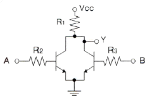
- OR
- NOR
- NAND
- AND
(정답률: 59%)
18. 5비트 2진 카운터의 입력에 4[MHz]의 정방향 펄스가 가해질 때 출력 펄스의 주파수는?
- 25[kHz]
- 50[kHz]
- 250[kHz]
- 125[kHz]
(정답률: 63%)
19. 비동기식 5진 카운터(Counter) 회로는 최소 몇 개의 플립플롭(Flip-Flop)이 필요한가?
- 4
- 3
- 2
- 1
(정답률: 81%)
20. 다음 그림과 같은 회로의 명칭은?
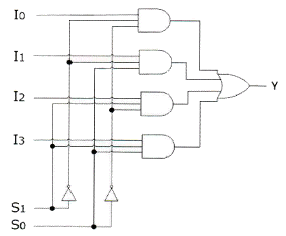
- 병렬가산기
- 멀티플렉서
- 디멀티플렉서
- 디코더
(정답률: 81%)
2과목: 정보통신 시스템
21. 다음 중 DSU(Digital Service Unit)의 기능으로 옳은 것은?
- 디지털 데이터를 디지털 신호로 변환
- 아날로그 데이터를 디지털 신호로 변환
- 디지털 신호를 아날로그 데이터로 변환
- 아날로그 신호를 디지털 데이터로 변환
(정답률: 85%)
22. 10개의 지국을 그물형(Mesh)으로 연결하려 할 때 소요되는 최소 링크 수는?
- 25
- 35
- 45
- 55
(정답률: 91%)
23. 다음은 정보통신 기술의 특징을 설명한 것이다. 무엇에 대한 설명인가?
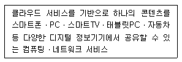
- N-Screen
- LTEM
- Super-WiFi
- MVNO
(정답률: 78%)
24. 다음 중 전송지연시간이 길어서 대화형 통신에 사용하기에는 적당하지 않은 것은?
- 메시지 교환방식
- 회선 교환방식
- 데이터그램 교환방식
- 가상회선 교환방식
(정답률: 74%)
25. 전화통신망(PSTN)에서 최번시 1시간에 발생한 호(Call)수가 240이고, 평균통화시간이 2분일 때 이 회선의 호량(Erlang)은?
- 0.1[Erl]
- 8[Erl]
- 40[Erl]
- 360[Erl]
(정답률: 90%)
26. 다음 중 HDLC 프로토콜에 대한 설명으로 옳지 않은 것은?
- 바이트 방식의 프로토콜이다.
- 단방향, 반이중, 전이중 방식 모두 사용이 가능하다.
- 데이터 링크 계층의 프로토콜이다.
- 오류제어방식으로 ARQ 방식을 사용한다.
(정답률: 71%)
27. 다음 중 TCP 프레임의 헤더 구조에 대한 설명으로 틀린 것은?
- 순차 번호(Sequence Number) 필드는 송신 TCP로부터 수신 TCP로 송신되는 데이터 스트림 중 마지막 바이트를 지정한다.
- 응답 번호(Acknowledgement Number)는 응답제어 비트가 설정되어 있을 때만 제공된다.
- Data Offset(HLEN)는 TCP Segment에 있는 데이터를 32비트 워드 단위로 나타낸다.
- Window Size는 수신부가 응답필드에서 지정한 번호부터 수신할 수 있는 바이트의 수를 표시한다.
(정답률: 72%)
28. 다음 중 대등-대-대등(peer-to-peer) 프로세스에 대한 설명으로 가장 적절한 것은?
- 통신장치 간에 통신할 때 해당계층에서 통신하는 각 장치의 프로세스
- 하나의 장치에서 각 계층이 바로 아래 계층의 서비스를 이용하는 프로세스
- 인접한 계층 사이의 인터페이스를 통해 전달되는 프로세스
- 임의의 두 통신장치 간에 자신의 구조에 상관없이 서로 통신할 수 있도록 해 주는 프로세스
(정답률: 80%)
29. 프로토콜의 주요 요소 중에서 데이터 전송시기와 전송속도에 관한 특성을 나타내는 것은?
- 타이밍
- 구문
- 의미
- 표준
(정답률: 88%)
30. PCM 통신방식에서 4[kHz]의 대역폭을 갖는 음성 정보를 8[bit] 코딩으로 표본화하면 음성을 전송하기 위해 필요한 데이터 전송률은 얼마인가?
- 4[kbps]
- 8[kbps]
- 32[kbps]
- 64[kbps]
(정답률: 65%)
31. 통신 중에 교환기의 스위치가 닫히게 되어 송신자와 수신자 사이에 물리적인 회선이 만들어지며 전화나 TV같은 연속적인 정보를 전송하는데 사용되는 교환방식은?
- 회선 교환
- 패킷 교환
- 메시지 교환
- 데이터그램 교환
(정답률: 82%)
32. 전화통신망(PSTN)에서 인접선로간 차폐가 완전하지 않아, 인접선로 상의 다른 신호에 영향을 미쳐 발생하는 품질저하 요인은?
- 누화(Cross Talk)
- 신호감쇠
- 에코(Echo)
- 신호지연
(정답률: 84%)
33. 다음 중 부가가치통신망(VAN)에 대한 설명으로 틀린 것은?
- VAN 사용자는 인터넷을 통해서만 VAN 정보에 접속할 수 있다.
- 은행의 본점과 지점간 또는 다른 은행간의 자동이체 등은 VAN에서 제공할 수 있는 서비스이다.
- 최근에는 개방형 구조의 인터넷기반 B2B, B2C로 발전하고 있다.
- VAN은 기존 통신망의 통신기능에 통신처리기능, 정보처리기능을 추가하여 가치를 높이는 통신망이다.
(정답률: 85%)
34. FM 피변조파의 최대 주파수 편이가 60[kHz], 최대 변조 신호 주파수가 15[kHz]일 때 FM 변조지수는 얼마인가?
- 3
- 4
- 5
- 6
(정답률: 90%)
35. 다음 중 H.264/MPEG-4 기술과 비교하여 약 2배 높은 압축률을 가지면서도 동일한 비디오 품질을 제공하는 고효율 비디오 코딩(압축) 표준은?
- HEVC(High Efficiency Video Coding)
- AVC(Advanced Video Coding)
- VCDG(Video Coding Experts Group)
- SVC(Scalable Video Coding)
(정답률: 89%)
36. 다음 중 CSMA/CD 방식에 관한 특징으로 옳지 않은 것은?
- 데이터 전송이 필요할 때 임의로 채널을 할당하는 랜덤할당방식이다.
- 버스 구조에 이용될 수 있다.
- 노드수가 많고, 데이터 전송량이 많을수록 안정적이고 효율적으로 전송이 가능하다.
- 채널로 전송된 프레임은 모든 노드에서 수신이 가능하다.
(정답률: 78%)
37. 다음 중 근거리통신망(LAN)에서 사용되는 채널할당방식에서 요구할당방식에 해당되는 것은?
- ALOHA
- TDM
- CSMA/CD
- Token Bus
(정답률: 56%)
38. 네트워크관리시스템(NMS) 운용 중 현장 Access 설비로부터 1분당 평균 20개의 패킷이 전송되어 오고 있다. 이 스테이션에서의 처리시간이 1패킷당 평균 2초라 할 때 시스템의 이용률은?
- 1/3
- 2/3
- 1/6
- 5/6
(정답률: 88%)
39. 정보통신시스템에서 신뢰성의 척도로 가동률을 사용하고 있다. MTBF=22시간, MTTR=2시간일 때 가동률을 구하면? (단, 소수점 3번째 자리에서 반올림 한다.)
- 0.98
- 0.96
- 0.94
- 0.92
(정답률: 82%)
40. 다음 중 정보통신시스템 구축시 네트워크에 관한 고려사항이 아닌 것은?
- 파일 데이터의 종류 및 측정방법
- 백업회선의 필요성 여부
- 단독 및 다중화 등 조사
- 분기회선 구성 필요성
(정답률: 74%)
3과목: 정보통신 기기
41. 다음 중 RFID 시스템의 구성요소로 틀린 것은?
- 태그와 리더
- 안테나
- 서버
- QR 코드
(정답률: 79%)
42. 최단 펄스시간 길이가 1,000×10-6[sec]일 때, 이 펄스의 변조속도는?
- 1[baud]
- 10[baud]
- 100[baud]
- 1,000[baud]
(정답률: 90%)
43. 통신 제어장치의 구성 중 전송 제어부의 기능이 아닌 것은?
- 전송 제어 문자의 식별
- 송ㆍ수신 데이터의 직ㆍ병렬 변환
- 오류 검출 부호의 생성 및 오류 검출
- 컴퓨터와의 데이터 전송
(정답률: 54%)
44. 다음 중 다중화 기술에 대한 설명으로 옳지 않은 것은?
- 하나의 통신로를 여러 가입자가 동시에 이용하여 통신할 수 있도록 하는 것이 다중화 기술이다.
- 아날로그방식의 주파수분할다중화(FDM)와 디지털방식의 시분할다중화(TDM) 및 코드분할다중화(CDM) 기술이 있다.
- 주파수분할다중화(FDM)는 채널마다 독립된 주파수대역으로 분할하여 다중화하는 방식으로 시분할다중화 또는 코드분할다중화보다 효율이 낮다.
- 시분할다중화(TDM)는 정해진 시간으로 슬롯을 배정하고 이를 다시 Frame으로 묶어 다중화하는 방식으로 코드분할다중화(CDM)보다 다중화 효율이 높다.
(정답률: 67%)
45. 다음 중 DSU(Digital Service Unit)에 대한 설명으로 옳은 것은?
- 전송신호 형태는 Analog 신호이다.
- 변조 방식으로는 주로 AMI(Bipolar)이다.
- 전송 속도는 1.2~9.6[kbps]이다.
- 사용 Network은 음성급 전용망, 교환망이다.
(정답률: 78%)
46. 케이블 모뎀을 64-QAM으로 하향 데이터전송(6[MHz] 대역폭)을 한다. 최대 데이터 전송률은?
- 20[Mbps]
- 30[Mbps]
- 36[Mbps]
- 40[Mbps]
(정답률: 80%)
47. 다음 중 모뎀의 궤환시험(Loop Back Test) 기능과 관련된 것이 아닌 것은?
- 모뎀의 패턴발생기와 내부회로의 진단테스트
- 자국내 모뎀의 진단 및 통신회선의 고장의 진단
- 전송속도의 향상
- 상대편 모뎀의 시험인 Remote Loop Back Test도 가능
(정답률: 74%)
48. 다음 중 공동이용기에 대한 설명으로 옳은 것은?
- 폴링 방식으로 네트워크를 제어하는 경우 통신 회선을 공동으로 이용하여 네트워크의 단순화와 비용을 절감할 수 있는 장치
- 여러 개의 단말장치들이 하나의 통신회선을 통하여 데이터를 전송하고, 수신 측에서도 여러개의 단말장치들의 신호로 분리하여 입출력할 수 있도록 하는 장치
- 전송회선의 데이터 전송 시간을 타임 슬롯(Time Slot)이라는 일정한 시간 폭으로 나누고, 이들을 일정한 크기의 프레임으로 묶어서 채널별로 특정시간대에 해당하는 슬롯에 배정하는 방식
- 실제로 전송할 데이터가 있는 단말장치에만 동적인 방식으로 각 부채널에 시간폭을 할당하는 장치
(정답률: 59%)
49. 팩시밀리의 원통직경이 50[mm]이고, 주사선 밀도가 5[선/mm]일 때 협동계수는 얼마인가?
- 10
- 25
- 100
- 250
(정답률: 76%)
50. H.323 또는 SIP(Session Initiation Protocol)의 프로토콜을 이용하여 인터넷 상에서 음성 전화 서비스를 제공하는 것을 무엇이라 하는가?
- VoIP
- Zigbee
- Bluetooth
- WPAN
(정답률: 88%)
51. 다음 중 디지털 지상파 TV 방송의 전송방식이 아닌 것은?
- ATSC
- DVB-H
- ISDB-T
- DMB-T/H
(정답률: 72%)
52. 현재 방송장비에서 많이 사용하는 전송 방식에서 아날로그 CCTV 카메라에서도 기존에 설치되어 있는 동축케이블을 활용해 고화질 영상전송이 가능하게 한 방식은?
- DNR
- HD-SDI
- HDMI
- WDR
(정답률: 75%)
53. 다음 중 VoIP 기술의 구성요소로 틀린 것은?
- 미디어 게이크웨이
- 시그널링 서버
- IP 터미널
- 구내 교환기
(정답률: 82%)
54. CDMA 대역확산 통신기술을 이용하여 다중경로전파 가운데 원하는 신호만을 분리할 수 있는 수신기는?
- 레이크 수신기
- Multi channel 수신기
- 헤테로다인 수신기
- VLR 수신기
(정답률: 82%)
55. 등방성 안테나로부터 거리가 2,000[m] 떨어져 있는 점의 전계강도는 약 얼마인가? (단, 안테나로부터 방사되는 전력은 10[W]이다.)
- 8.66[mV/m]
- 0.866[mV/m]
- 1.866[mV/m]
- 0.186[mV/m]
(정답률: 54%)
56. 만약 우리나라에서 대륙간 국제 통화 회선 구성시, 고정 위성(Geostationary Satellite) 통신링크가 2개 포함되면(예를 들어 태평양 상공의 위성과 인도양 상공의 위성) 어떤 현상이 발생하는지 가장 적절하게 설명한 것은?
- 음량이 약해서 통화에 불편하다.
- 반향(Echo)이 발생하여 통화에 방해가 된다.
- 2개의 위성 링크 홉(Hop)에서 전송 에러거 증가하여 통화의 명료도가 저하된다.
- 지연이 증가하여 실시간 대화가 어렵다.
(정답률: 65%)
57. HPA를 사용하는 기지국(BTS)에서 송신안테나의 개수를 줄이기 위해 사용하는 장치는?
- 필터
- 중계기
- 콤바이너
- 트랜시버
(정답률: 59%)
58. 휴대전화에 인터넷 통신과 정보검색 등 컴퓨터 지원 기능을 추가한 지능형 단말기로 사용자가 원하는 애플리케이션을 설치할 수 있는 멀티미디어 기기는 무엇인가?
- Tablet PC
- PDA
- Smart Phone
- Smart Grid
(정답률: 88%)
59. 멀티미디어 데이터 압축 기법 중 혼성압축 기법으로 틀린 것은?
- MPEG
- JPEG
- GIF
- FFT
(정답률: 84%)
60. Full HD(1,920×1,080화소) TV방송보다 4배 이상 화질이 선명한 ‘4K급 초고화질’ TV방송 및 실물에 각까운 생생한 화질을 제공하는 멀티미디어 기기는 무엇인가?
- 3DTV
- Smart TV
- UHD TV
- IPTV
(정답률: 89%)
4과목: 정보전송 공학
61. 다음 중 표본화 주파수가 높다는 것은 무엇을 의미하는가?
- 초당 샘플수가 낮다.
- 전송하려는 정보의 양이 적다.
- 요구되는 채널 용량이 커진다.
- 초당 프레임수가 낮다.
(정답률: 85%)
62. 다음 중 나이퀴스트(Nyquist) 표본화 주파수(fs)로 알맞은 것은?
- fs = 2fm
- fs < 2fm
- fs ≥ 2fm
- fs ≤ 2fm
(정답률: 77%)
63. 16진 PSK를 사용하는 시스템에서 데이터 신호속도가 12,400[bps]라면 변조속도는 얼마인가?
- 775[baud]
- 1,550[baud]
- 3,100[baud]
- 6,200[baud]
(정답률: 84%)
64. 다음 중 회로구성이 간단하고 가격이 저렴하며, 잡음이나 신호의 변화에 약하며, 광섬유를 이용한 디지털 전송에서 사용되는 변조방식은?
- ASK
- FSK
- PSK
- QAM
(정답률: 61%)
65. 다음 중 전송로 상의 구조 분산(도파로 분산)에 대한 설명으로 틀린 것은?
- 광섬유의 구조에 변화가 생겨 빛과 광케이블이 이루는 각이 파장에 따라 변해서 발생
- 실제 전송로의 경로의 길이에 변화가 발생하게 되고 도착 시간의 차이가 발생
- 광 펄스가 옆으로 퍼지는 현상
- 모드 사이의 전달되는 전파속도 차이 때문에 발생하는 분산
(정답률: 57%)
66. 다음 중 전송특성 열화 요인에서 정상 열화 요인에 속하지 않는 것은?
- 위상 히트
- 군지연 왜곡
- 주파수 편차
- 고주파 왜곡
(정답률: 61%)
67. 다음 중 이동통신에서 나타나는 페이딩 현상으로 맞는 것은?
- 이동체의 움직임에 따라 관측점과 파원의 실효 길이가 변호하게 되어 수신 신호 주파수가 변하는 현상이다.
- 신호 전파의 도달 거리 차에 의해 수신 전계강도가 시간적으로 변동하는 현상이다.
- 인접한 이동체간에 동일 주파수 채널을 사용함으로써 발생하는 간섭현상이다.
- 전파가 전송되는 과정에서 다중 반사되어 나타나는 지연 현상이다.
(정답률: 66%)
68. 다음과 같은 전송매체에 대한 표기방법에 대한 설명으로 옳지 않은 것은?
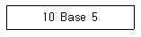
- 전송속도가 10[Mbps]이다.
- 기저대역 전송을 행한다.
- 전송매체가 동축케이블이다.
- 전송거리가 최장 5[km]이다.
(정답률: 81%)
69. 다음 중 공통선 신호 방식에 해당하지 않는 것은?
- 통화로와 신호전송이 분리되어 다수의 통화에 필요한 신호를 한 채널로 전송하는 방식
- 아날로그 신호방식(No.6)
- 디지털 신호방식(No.7)
- 국 간 망에 분포되어 있는 트래픽 부하를 조절하기 위해서 전화국 간에 주고받는 신호
(정답률: 61%)
70. 다음 중 비동기식 전송(Asynchronous Transmission)에 대한 설명으로 알맞은 것은?
- 문자와 문자 사이에 휴지시간(Idle Time)이 없다.
- 2,400[bps] 이상의 전송 속도에 주로 사용한다.
- 문자 전송 시 한 문자 단위로 동기를 유지한다.
- 각 문자 앞에는 2개의 시작 펄스, 뒤에는 3개의 정지 펄스가 있다.
(정답률: 54%)
71. 다음 중 데이터 전송방식에서 혼합형 동기식 전송방식에 대한 설명으로 옳지 않은 것은?
- 각 글자의 앞뒤에 스타트 비트와 스톱 비트를 갖는다.
- 동기식 전송의 특성과 비동기식 전송의 특성을 혼합한 방식이다.
- 전송속도가 비동기식보다 빠르다.
- 송신측과 수신측이 동기상태에 있지 않아도 된다.
(정답률: 76%)
72. 다음 [보기]의 공통선 신호방식에 대한 설명으로 옳은 내용을 모두 선택한 것은?
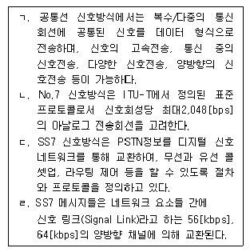
- ㄱ
- ㄱ, ㄴ
- ㄱ, ㄴ, ㄷ
- ㄱ, ㄷ, ㄹ
(정답률: 68%)
73. 다음 중 VLAN의 종류로 거리가 먼 것은?
- 포트기반(Port-based) VLAN
- LLC 주소기반 VLAN
- 프로토콜 기반 VLAN
- IP서브넷을 이용한 VLAN
(정답률: 60%)
74. 라우팅의 루핑 문제를 방지하기 위한 여러 가지 방법 중 라우팅 정보가 들어온 곳으로는 같은 라우팅 정보를 내보내지 않는 방법을 무엇이라 하는가?
- 최대 홉 카운트(Maximum Hop Count)
- 스플릿 호라이즌(Split Horizon)
- 홀드 다운 타이머(Hold Down Timer)
- 라우트 포이즈닝(Route Poisoning)
(정답률: 77%)
75. 다음 중 IP주소체계에서 네트워크 주소(network address)에 대한 설명으로 틀린 것은?
- 라우팅 프로토콜에서 네트워크를 지칭할 때 사용한다.
- IP주소와 서브넷 마스크를 AND 연산한다.
- 네트워크 자체를 의미한다.
- 패킷의 송신 주소나 수신 주소로 사용이 가능하다.
(정답률: 59%)
76. 다음 중 VLAN(Virtual LAN)에 대한 설명으로 틀린 것은?
- 한 대의 스위치를 마치 여러대의 분리된 스위치처럼 사용한다.
- 여러 개의 네트워크 정보를 하나의 포트를 통해 전송할 수 있는 기술을 제공한다.
- IEEE 802.1p은 VLAN 국제 표준 규격이다.
- 더 작은 LAN으로 세분화시켜 과부하 감소가 가능하다.
(정답률: 57%)
77. 다음 중 전송 오류 제어에서 Stop-and-wait ARQ 방식에 대한 설명으로 틀린 것은?
- ARQ 방식 중 가장 간단하다.
- 전파 지연이 긴 시스템에 효과적이다.
- 오류 검출이 뛰어나다.
- 메모리 Buffer 용량은 큰 블록 데이터를 저장할 수 있어야 한다.
(정답률: 61%)
78. 다음 ITU-T 권고안 시리즈 중 전화 전송품질과 전화기에 관한 사항을 규정한 것은?
- I
- Q
- P
- X
(정답률: 68%)
79. HDLC(High-level Data Link Control) 프로토콜 프레임의 제어부 형식 중 링크 상태의 초기 설정, 데이터 전송 동작 모드의 설정 요구 및 응답, 데이터 링크의 확립 및 절단 등에 사용되는 형식은?
- 정보전송 형식(I frame)
- 감시 형식(S frame)
- 비번호제 형식(U frame)
- 시험 형식(T frame)
(정답률: 69%)
80. 전송제어 프로토콜 중 BASIC 프로토콜의 전송제어 문자 내용이 틀린 것은?
- SYN : 헤딩의 시작
- STX : 헤딩의 종료 및 TEXT의 개시
- EOT : 전송의 끝 및 데이터링크의 초기화
- ACK : 수신한 정보 메시지에 대항 긍정응답
(정답률: 75%)
5과목: 전자계산기일반 및 정보통신설비기준
81. 다음 중 운영체제(Operating System)의 성능을 극대화하기 위한 조건이 아닌 것은?
- 사용 가능도(Availability) 증대
- 신뢰도(Reliability) 향상
- 처리능력(Throughput) 증대
- 응답시간(Turn Around Time) 연장
(정답률: 80%)
82. 16비트 명령어 형식에서 연산코드 5비트, 오퍼랜드1은 3비트, 오퍼랜드2는 8비트일 경우, ⓐ 연산종류와 사용할 수 있는 ⓑ 레지스터의 수를 올바르게 나열한 것은?
- ⓐ 32가지, ⓑ 512
- ⓐ 31가지, ⓑ 8
- ⓐ 32가지, ⓑ 8
- ⓐ 8가지, ⓑ 511
(정답률: 73%)
83. 다음 중 DMA(Direct Memory Access)에 대한 설명으로 틀린 것은?
- 주변장치와 기억장치 등의 대용량 데이터 전송에 적합하다.
- 프로그램방식보다 데이터의 전송속도가 느리다.
- CPU의 개입없이 메모리와 주변장치 사이에서 데이터 전송을 수행한다.
- DMA 전송이 수행되는 동안 CPU는 메모리 버스를 제어하지 못한다.
(정답률: 67%)
84. 다음의 데이터 코드 중 가중치 코드가 아닌 것은?
- 8421 코드
- 바이퀴너리(Biquinary) 코드
- 그레이(Gray) 코드
- 링 카운터(Ring Couter) 코드
(정답률: 78%)
85. 다음 중 CPU의 하드웨어(Hardware) 요소들을 기능별로 분류할 경우 포함되지 않는 것은?
- 연산 기능
- 제어 기능
- 입출력 기능
- 전달 기능
(정답률: 56%)
86. 다음 내용은 어떤 용어에 대한 설명인가?
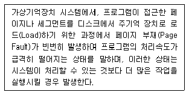
- 오버레이(Overlay)
- 스래싱(Thrashing)
- 데드락(Deadlocks)
- 덤프(Dump)
(정답률: 67%)
87. 다음 내용이 의미하는 소프트웨어는 무엇인가?
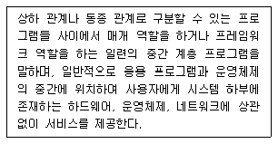
- 유틸리티
- 디바이스 미들웨어
- 응용소프트웨어
- 미들웨어
(정답률: 80%)
88. 다음 프로그램 언어 중 구조적 프로그래밍(Structured Programming)에 적합한 기능과 구조를 갖는 것은?
- BASIC
- FORTRAN
- C
- RPG
(정답률: 82%)
89. 다음 중 마이크로프로세서에 대한 설명으로 틀린 것은?
- 마이크로프로세서는 데이터를 시스템 메모리에 쓰거나 시스템 메모리로부터 읽어 들일 수 있다.
- 마이크로프로세서는 데이터를 입출력장치에 쓰거나 입출력 장치로부터 읽어 들일 수 있다.
- 마이크로프로세서는 시스템 메모리로부터 명령어를 읽어 들일 수 없다.
- 마이크로프로세서는 데이터를 가공할 수 있다.
(정답률: 70%)
90. 다음 논리회로에 의해 계산된 결과 X는?
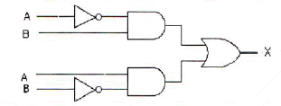
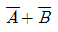
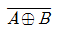
- A ⊕ B
- A • B
(정답률: 75%)
91. 다음 문장의 괄호 안에 들어갈 알맞은 것은?
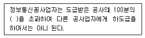
- 20
- 30
- 50
- 60
(정답률: 82%)
92. 선로설비의 회선 상호간, 회선과 대지간 및 회선의 심선 상호 간의 절연저항은 직류 500볼트 절연저항계로 측정하여 몇 옴 이상이어야 하는가?
- 1메가 옴
- 10메가 옴
- 50메가 옴
- 100메가 옴
(정답률: 74%)
93. 다음 중 미래창조과학부장관이 소속 공무원으로 하여금 방송통신 설비를 설치ㆍ운영하는 자의 설비를 조사하거나 시험하게 할 수 있는 경우가 아닌 것은?
- 방송통신설비 관련 시책을 수립하기 위한 경우
- 국가 비상사태에 대비하기 위한 경우
- 재난 재해 예방을 위한 경우
- 설치한 목적에 반하여 운용한 경우
(정답률: 66%)
94. 다음 중 전기통신사업령이 정하는 사항을 갖추어 미래창조과학부장관에게 등록하면 경영할 수 있는 전기통신사업은?(오류 신고가 접수된 문제입니다. 반드시 정답과 해설을 확인하시기 바랍니다.)
- 기간통신사업
- 별정통신사업
- 통합통신사업
- 부가통신사업
(정답률: 69%)
95. 방송통신발전기본법에서 규정한 ‘방송통신 표준화’의 목적이 아닌 것은?
- 방송통신의 건전한 발전을 위하여
- 방송통신기자재 생산업자의 편의를 도모하기 위하여
- 방송시청자의 편의를 도모하기 위하여
- 방송이용자의 편의를 도모하기 위하여
(정답률: 78%)
96. 다음 중 정보통신공사업법령에서 규정한 정보통신기술자의 인정을 취소할 수 있는 경우는?
- 동시에 두 곳 이상의 공사업체에 종사한 경우
- 타인에게 자기의 성명을 사용하여 공사를 수행하게 한 경우
- 해당 국가기술자격이 취소된 경우
- 다른 사람에게 자기의 경력수첩을 대여해준 경우
(정답률: 70%)
97. 다음 중 정보통신공사의 설계 및 시공에 관한 설명으로 틀린 것은?
- 공사를 설계하는 자는 기술기준에 적합하도록 설계하여야 한다.
- 설계도서를 작성하는 자는 그 설계도서에 서명 또는 기명날인하여야 한다.
- 감리원은 설계도서 및 관련 규정에 적합하도록 공사를 감리하여야 한다.
- 감리업체는 그가 감리한 공사의 준공설계도서를 준공 후 5년간 보관하여야 한다.
(정답률: 85%)
98. 공사 발주자가 감리원에 대해 취할 수 있는 시정조치에 해당하는 것은?
- 시정지시
- 감리원의 업무정지
- 감리원의 감봉조치
- 감리원의 철수요구
(정답률: 71%)
99. 다음 중 구내통신선로설비의 설치 및 철거 방법으로 잘못된 것은?
- 구내에 5회선 이상의 국선을 인입하는 경우 옥외회선은 지하로 인입한다.
- 사업자는 이용약관에 따라 체결된 서비스 이용계약이 해지된 경우에는 설치된 옥외회선을 철거하여야 한다.
- 배관시설은 설치된 후 배선의 교체 및 증설시공이 쉽게 이루어질 수 있는 구조로 설치하여야 한다.
- 인입맨홀ㆍ핸드홀 또는 인입주까지 지하인입배관을 설치한 경우에는 지하로 인입하지 않아도 된다.
(정답률: 82%)
100. 다음 문장의 괄호 안에 들어갈 내용으로 옳지 않은 것은?
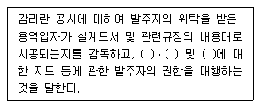
- 품질관리
- 시공관리
- 사후관리
- 안전관리
(정답률: 73%)
교류입력의 반주기 동안, 브리지 정류기의 다이오드 중 두 개는 항상 순방향 바이어스 상태이다. 이는 교류입력의 양/음성 주기에 따라 다이오드의 방향이 바뀌기 때문이다. 따라서 이 두 개의 다이오드는 교류입력의 양/음성 주기에 따라 전류를 통과시키며, 나머지 두 개의 다이오드는 역방향 바이어스 상태이므로 전류가 흐르지 않는다. 이를 통해 교류입력을 정류하여 직류 출력을 얻을 수 있다.